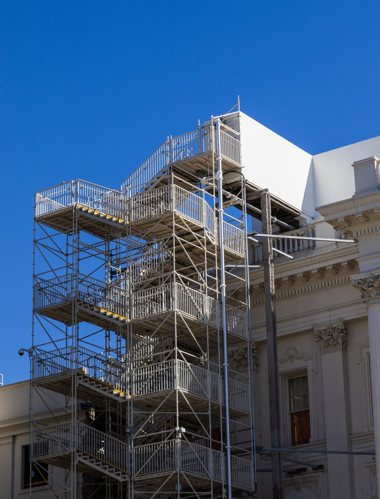
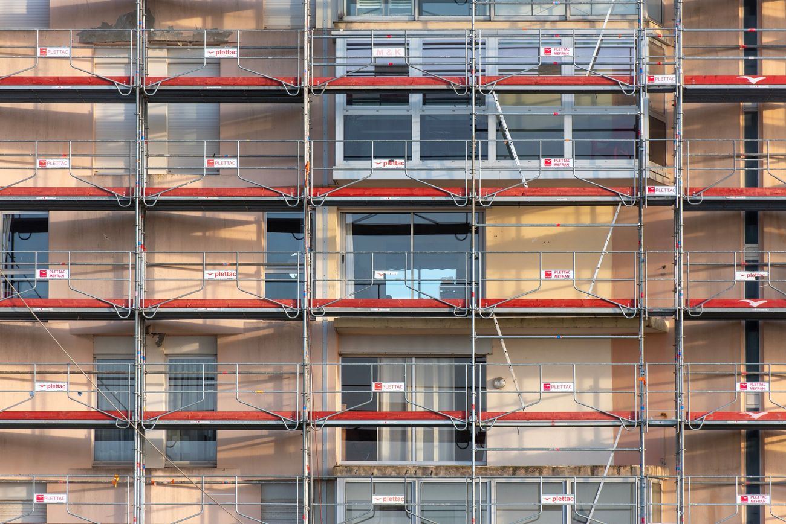
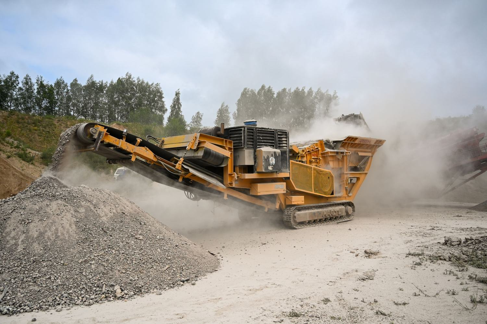
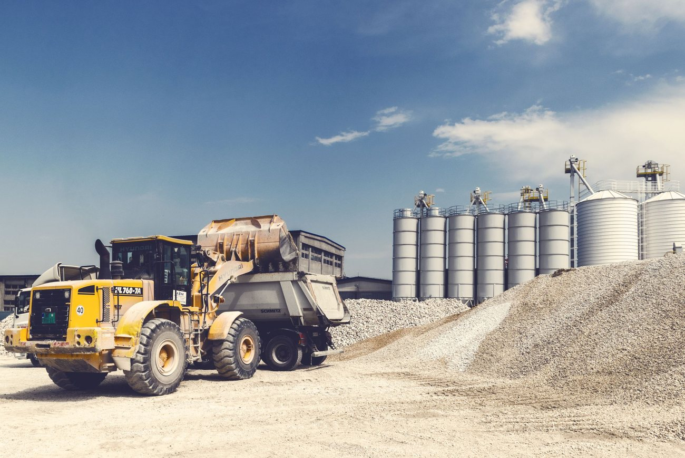
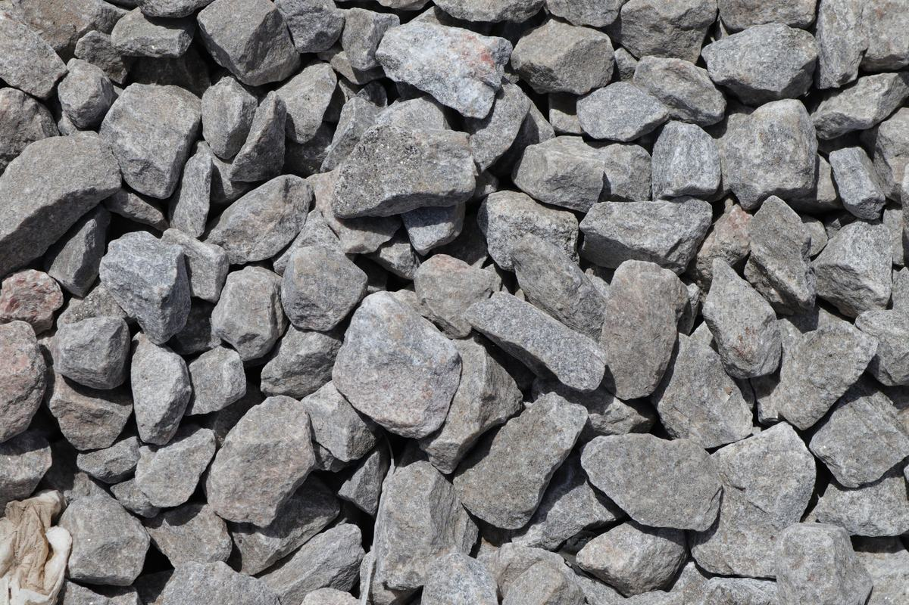
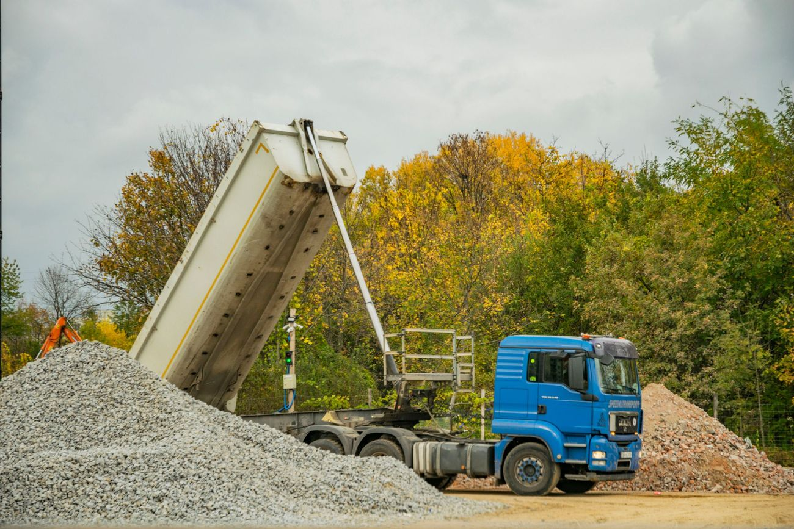

Impresa edile · Stezzano (BG)
Costruire, ristrutturare, recuperare.
Manutenzione e restauro di edifici.

Restauromanutenzione e ristrutturazione di edifici
Stezzanoimpianto di recupero in via Circonvallazione Est
Azzano San Paolosede in via Ugo Foscolo
4,3su Google, 12 recensioni
01Edilizia
Edifici tenuti in buona salute.
Lavori di manutenzione, ristrutturazione e restauro su case, condomini ed edifici, dal sopralluogo alla consegna.

- 01
Manutenzione di edifici
Facciate, coperture, parti comuni: gli interventi che servono, prima che diventino urgenti.
- 02
Ristrutturazioni
Case e appartamenti rifatti dentro e fuori, con un'unica impresa che coordina il cantiere.
- 03
Restauro
Edifici con una storia, trattati con i materiali e i tempi giusti.
02Recupero inerti
Dalle macerie, un nuovo sottofondo.
- 01
Le macerie
Calcestruzzo, laterizi e pietre da demolizioni e ristrutturazioni arrivano all'impianto di Stezzano.
- 02
La frantumazione
Il frantoio riduce i blocchi in pezzi più piccoli.
- 03
La vagliatura
Il materiale viene diviso per pezzatura, dal grosso al fine.
- 04
Di nuovo in cantiere
L'aggregato riciclato torna a lavorare: sottofondi per strade, piazzali e riempimenti.

03L'impianto di Stezzano
Meno discarica, meno cava.
Ogni metro cubo di macerie recuperato è materiale che non finisce in discarica e ghiaia che non serve scavare. Per imprese, privati e cantieri della zona tra Bergamo, Stezzano e Azzano San Paolo.
- Conferimento di macerie edili
- Aggregati riciclati per sottofondi e riempimenti



Foto di esempio: qui vanno le foto dei vostri cantieri e dell'impianto.